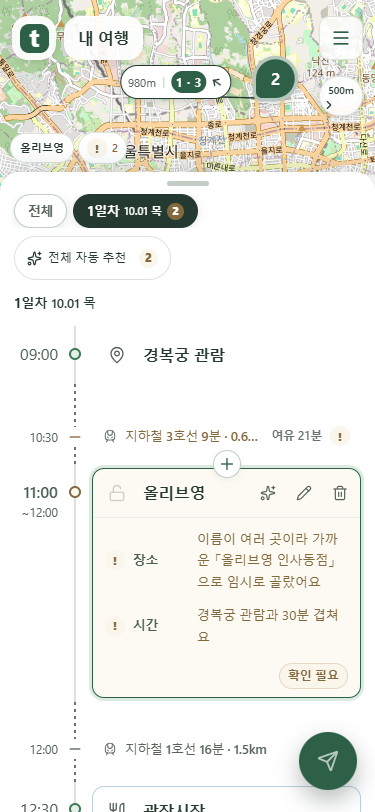
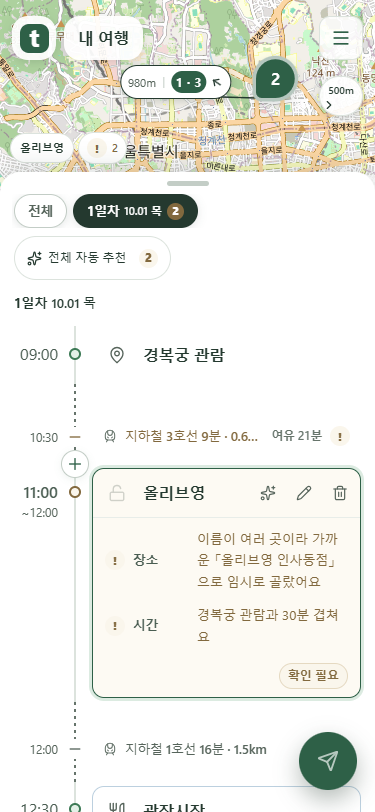
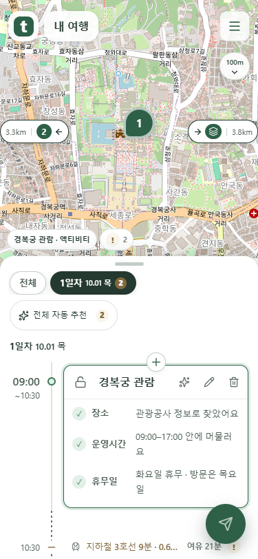
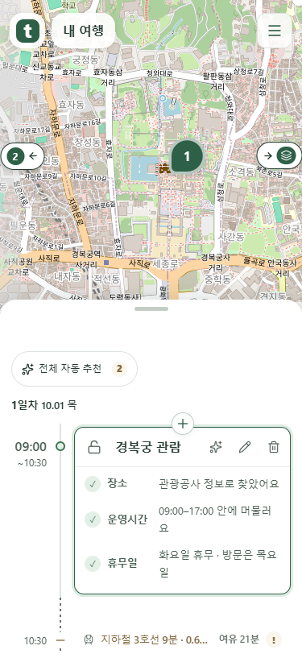
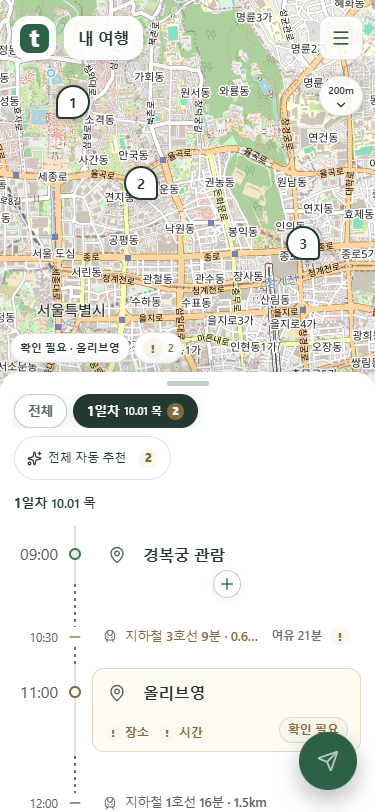
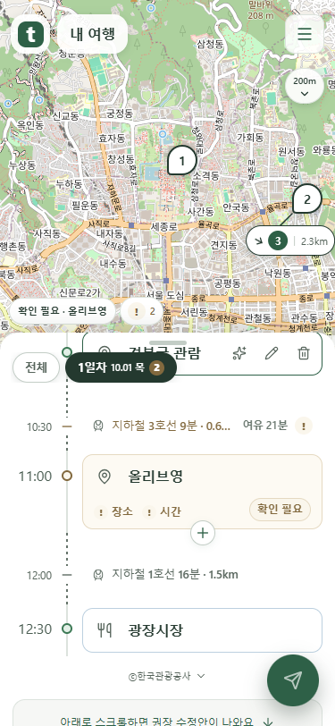
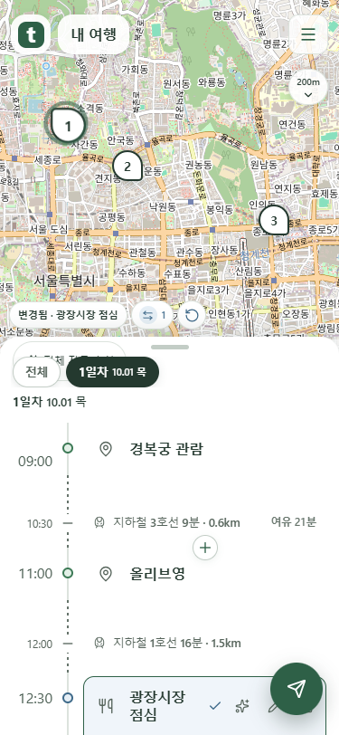

일정 추가, 네 가지 배치 비교
같은 일정·같은 스크롤 위치에서 촬영했습니다. 이전 원형 버튼으로 복원했으며 나머지 세 안은 비교용입니다.
이전 원형 + · 현재 적용
일정 사이 중앙에 둡니다. 기존 사용 방식과 간격을 유지하는 안입니다.

세로선 옆
시간의 흐름을 따라 일정이 들어갈 지점을 보여 줍니다. 시간·이동 표시와 가까워지는 배치입니다.

가로 구분선
얇은 가로선으로 삽입 지점을 보여 줍니다. 구분선이 하나 더 보이는 안입니다.
좌우 순서·마커 색·여러 일정
왼쪽은 거리 → 번호/여러 일정 → 화살표, 오른쪽은 화살표 → 번호/여러 일정 → 거리입니다. 세 개 이상은 겹친 아이콘으로 표시합니다.

지도 조작 중
거리만 숨겨 폭을 줄이고, 조작을 멈추면 복원합니다. 번호의 색은 선택 지도 마커와 같습니다.

미선택 안내·날짜
마커를 선택하지 않았을 때 확인이 필요한 내용을 먼저 보여 줍니다. 하루짜리 일정도 날짜를 표시합니다.

스크롤을 멈추면 날짜 복귀
날짜는 조작 중만 사라졌다가 돌아옵니다. 전체 자동 추천은 목록 맨 위에 있어 스크롤하면 함께 사라집니다.

확인할 내용이 없으면 변경 안내
되돌릴 수 있는 변경이 남아 있다면 그 일정의 내용을 표시합니다.

mock 서버 시험 화면입니다. 공개 cs 프로젝트 서버 응답 확인·배포 완료를 의미하지 않습니다.